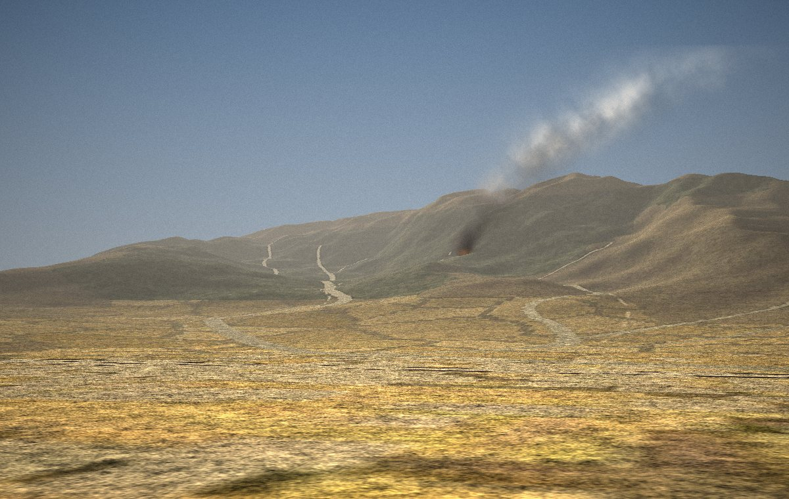

Report a fire
Wildfire Response
Call 911

Photo
Video
Point at the smoke and take a photo.
±25 ft
Facing N
2:34 PM
What do you see?
{{o.label}}
How far away is it?
{{o.label}}
Send report
Forest Fire Watch